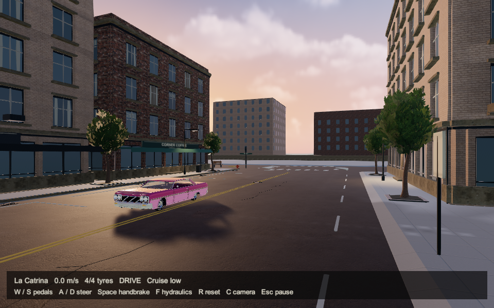
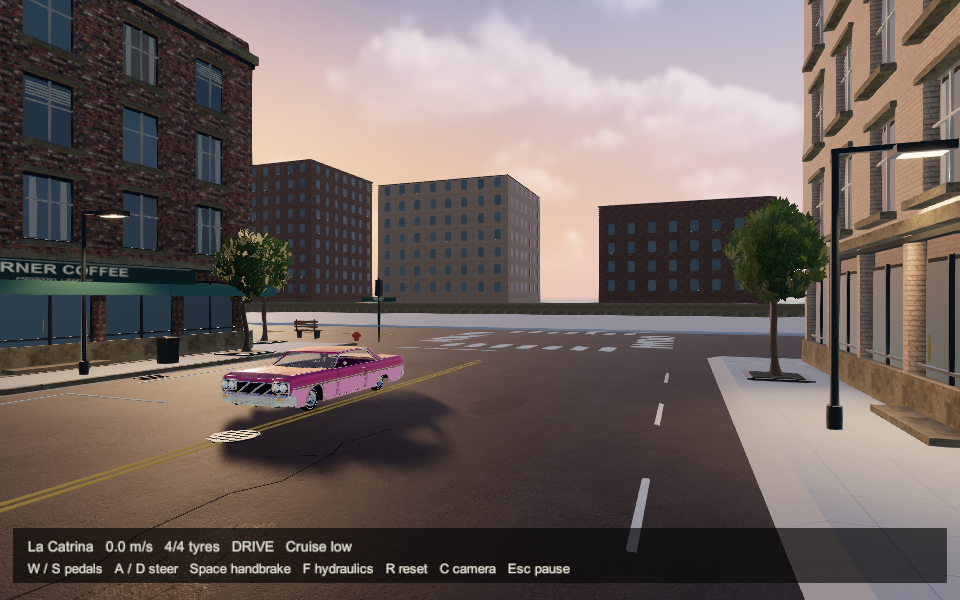
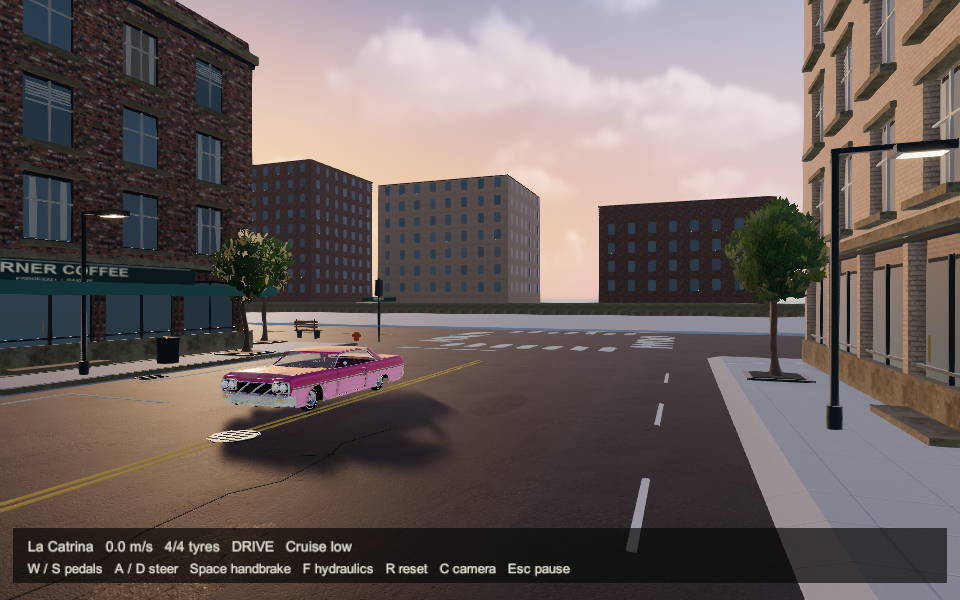
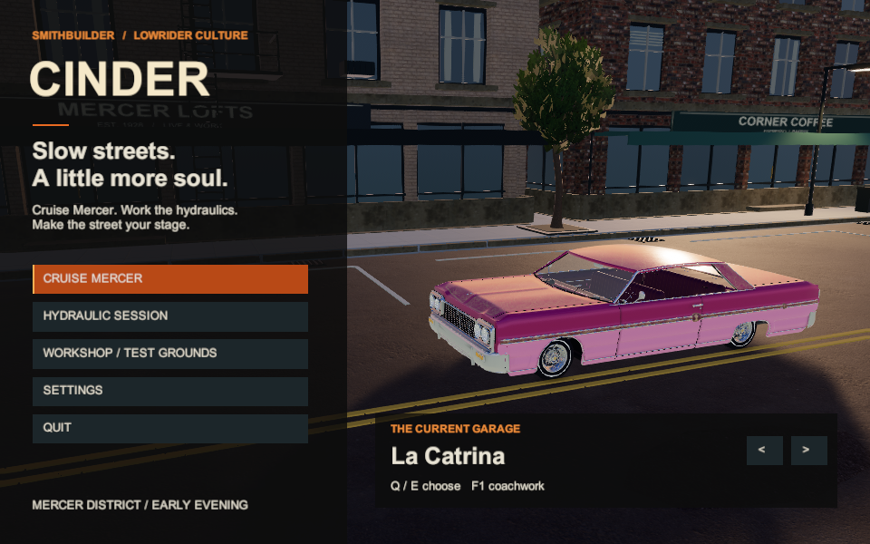
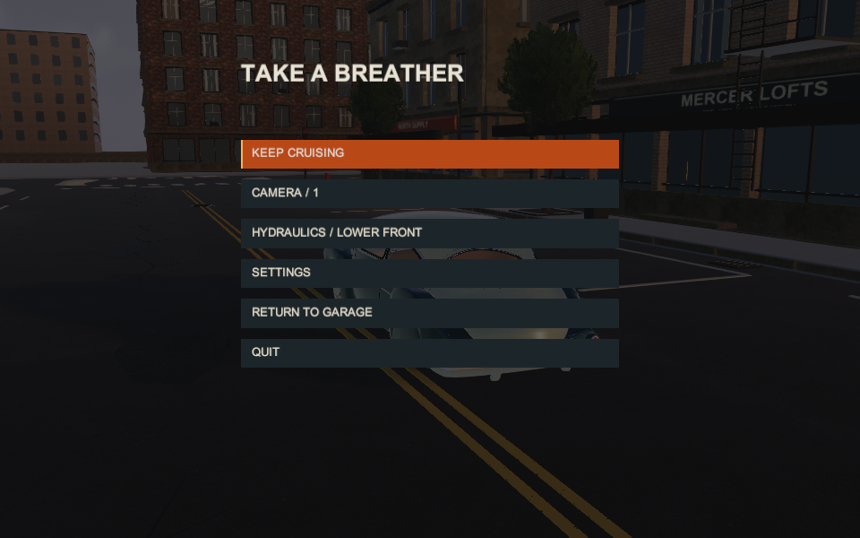
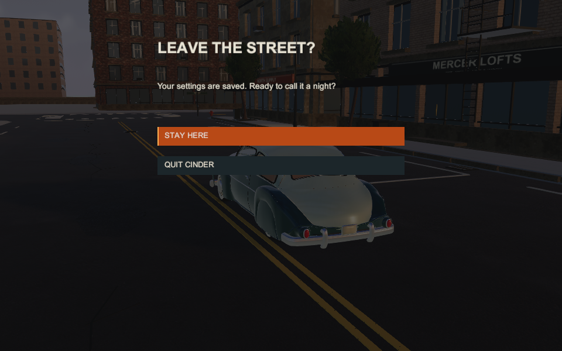
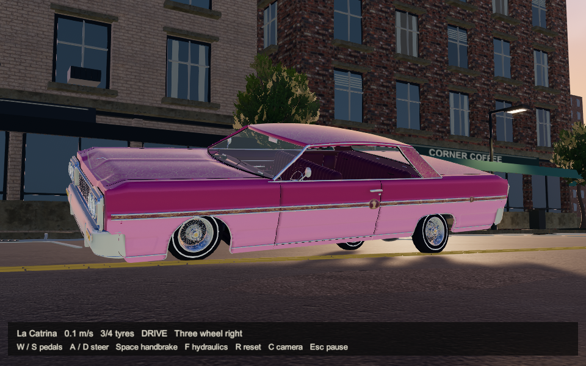
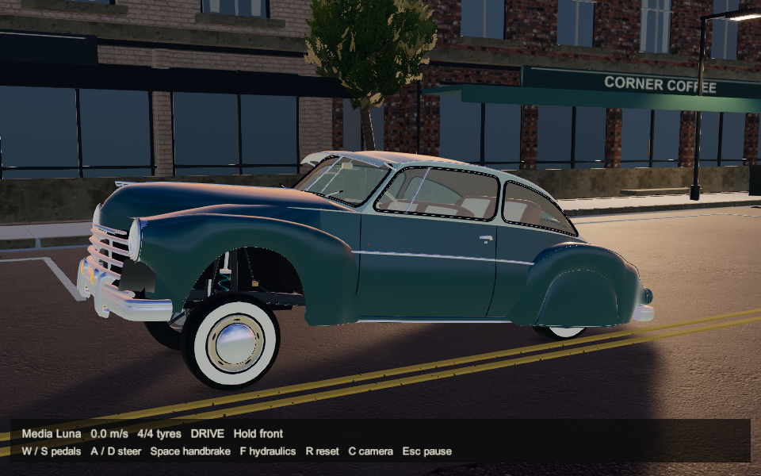
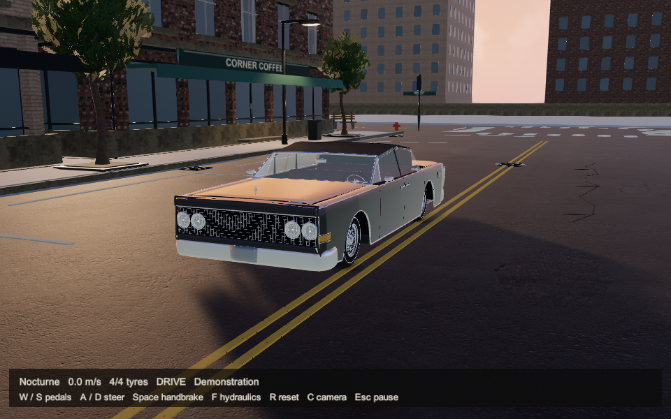

CINDER / NOVEMBER 11 / ORIGINAL UNITY PLAYER CAPTURESMercer, before the night arrives.

Low warm sun, peach and lavender clouds, readable streets and the first warm streetlights.
A new approximately 6 PM lighting profile. Sky, reflections and ambient light agree; street fixtures illuminate nearby pavement and facades. Teal, magenta and blue-grey lowriders retain their identities. The city geometry and driving rules stay intact.
Independent lighting review: 7.5/10, prototype retention supported. Both palette and road-shadow blockers found during iteration are corrected in actual frames. Fine reflections, coarse shadows and approximate lamp occlusion remain polish work. Broader Level 2 art and handheld performance are not approved.
Independent lighting review · Quality review · Technical binding · Delivery and play
Same scene, daylight and sunset
Left: the retained daylight profile. Right: sunset. These unchanged captures use the same r28 player, camera and recorded state. This is a controlled profile comparison, not a claim that the daylight frame is a separate r25 executable.
Drag the divider to compare sky, reflections, facades and street light.
The streetlights do real surface lighting
Focused controls at the same recorded position. The off control retains fixture emission but removes its illumination. Existing lamp heads, no painted pool decals. Building visibility is approximated at static vertices; moving-object occlusion is not fully shadow mapped.

Illumination on
Illumination off, glowing fixture retained69 seconds in the actual player
2,070 original 960 x 600 frames at 30 fps: menus, Catrina hydraulics/driving, Luna lift and Nocturne air/roof. Silent automated evidence. Reviewers inspected stills and sampled original sequence frames; they did not continuously watch the entire film or listen to audio. Video stays local, off GitHub.
The six-still normal review packet

Early-evening garage
Pause
Quit confirmation
Catrina: lace, trim and shadow reception
Media Luna: teal and ivory preserved
Nocturne: blue-grey paint, warm reflections
853 technical checks and ten scripted menu checks pass. Matched r25/r28 capped median: 33.3414 / 33.3378 ms; p99: 36.0492 / 35.0822 ms. Draws remain 219 and active geometry 693,585 triangles. External process peak rises about 25.6 MB. These short PNG-IO measurements do not prove GPU headroom or handheld 1080p/60 performance.
Identity and hashes · Preserved rejected palette/shadow iteration · Previous r25 gallery